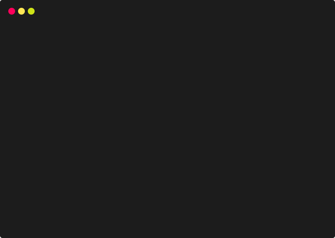

部署
完成开发并且在开发环境验证之后，就需要部署给我们的用户了。

构建
先执行下面的命令，
npm run build
几秒后，输出应该如下：
> delicate-rs@5.0.0-beta build /Users/delicate/delicate-web
> umi build
[21:13:17] webpack compiled in 43s 868ms
DONE Compiled successfully in 43877ms 21:13:17
File sizes after gzip:
1.3 MB dist/vendors.async.js
308.21 KB dist/umi.js
45.49 KB dist/vendors.chunk.css
36.08 KB dist/p__chart__highCharts__index.async.js
33.53 KB dist/p__user__index.async.js
22.36 KB dist/p__chart__ECharts__index.async.js
4.21 KB dist/p__dashboard__index.async.js
4.06 KB dist/umi.css
...
build 命令会打包所有的资源，包含 JavaScript, CSS, web fonts, images, html 等。你可以在 dist/ 目录下找到这些文件。
如果有使用 HashHistory 、 部署 html 到非根目录、静态化等需求，请查看Umi 部署。
本地验证
发布之前，可以通过 serve 做本地验证，
$ yarn global add serve
$ serve ./dist
Serving!
- Local: http://localhost:5000
- On Your Network: http://{Your IP}:5000
Copied local address to clipboard!
访问 http://localhost:5000，正常情况下法应该是和 npm start 一致的（接口可能无法获取到正确数据）。
部署
接下来，我们可以把静态文件上传到服务器，如果使用 Nginx 作为 Web server，你可以在 ngnix.conf 中这样配置：
server
{
listen 80;
# 指定可访问的域名
server_name web.delicate-rs.com;
# 编译后的文件存放的目录
root /home/www/delicate-web/dist;
# 代理服务端接口，避免跨域
location /api {
proxy_pass http://*.*.*.*:8090/api;
}
# 因为前端使用了BrowserHistory，所以将路由 fallback 到 index.html
location / {
index index.html;
try_files $uri $uri/ /index.html;
}
}
重启 Web server，访问 http://web.delicate-rs.com ，你将看到正确的页面。
nginx -s reload
类似的，如果你使用 Caddy 作为 Web server，你可以在 Caddyfile 中这样配置：
web.delicate-rs.com {
gzip
root /home/www/delicate-web/dist
proxy /api http://localhost:7000
rewrite {
if {path} not_match ^/api
to {path} {path}/ /
}
}
web.delicate-rs.com/public {
gzip
root /home/www/delicate-web/dist/static/public
}